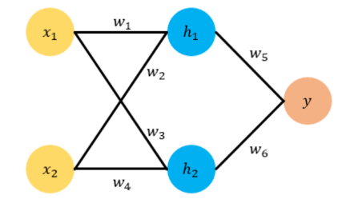

机器学习 - 神经网络
一、机器学习与神经网络概述
1. 机器学习核心目标
机器学习的核心目标是通过数据学习一个函数 \(f(x)\)，完成从输入到输出的映射。主要分为：
- 回归 (Regression)： 函数的输出是一个数值。
- 分类 (Classification)： 函数的输出是一个类别。
- 生成 (Generation)： 函数的输出是一个数据（如图像、文本）。
2. 神经网络 (Neural Networks)
- 起源： 尝试模拟生物大脑的算法。
- 历史： 80年代和90年代初广泛使用，90年代末期热度有所下降，近年来凭借其卓越性能在许多应用中成为最先进的技术并再次复苏。
- 类比人脑： 人脑神经网络是由大量具有适应性的简单同构单元（神经元）组成的广泛并行互连网络，能够模拟生物神经系统对真实世界的交互反应。
二、神经元模型
1. 生物神经元结构
- 树突 (Dendrites)： 多个，主要用来接受传入信息。
- 轴突 (Axon)： 一条，尾端有许多轴突末梢。
- 突触 (Synapse)： 轴突末梢与其他神经元的树突产生连接，传递信号。
- 信息传递： 当神经元接收的信号累积到一定阈值时，会释放神经递质，通过突触刺激下一个神经元。
2. MP神经元模型 (McCulloch-Pitts Neuron Model, 1943)
这是最早的抽象神经元模型，类比生物神经元结构：
- 输入 (Inputs)： 类比树突，接收信号。
- 计算 (Computation)： 类比细胞核，处理信息。
- 输出 (Output)： 类比轴突，传递信号。
一个典型的MP神经元模型包含：
- \(N\) 个输入：\(a_1, a_2, \dots, a_N\)
- 对应的权值 (Weights)：\(w_1, w_2, \dots, w_N\)
- 一个求和单元：计算输入的加权和 $ \sum_{i=1}^{N} w_i a_i $
- 一个非线性激活函数 (Activation Function) \(g(\cdot)\)
- 一个输出：\(z\)
graph LR
A[输入 a1] --> C[计算单元]
B[输入 a2] --> C
C --> D[输出 z]
style C fill:#f9f,stroke:#333
输出计算过程：
输入信号首先被加权求和： $$ \text{sum} = w_1 a_1 + w_2 a_2 + \dots + w_N a_N = \mathbf{w}^T \mathbf{a} $$ 然后，加权和经过激活函数 \(g\) 处理得到输出： $$ z = g(\text{sum}) = g(\mathbf{w}^T \mathbf{a}) $$ 在最初的MP模型中，激活函数 \(g\) 通常是 符号函数 (sign function, sgn)： $$ \text{sgn}(x) = \begin{cases} 1, & \text{if } x \ge 0 \ -1, & \text{if } x < 0 \end{cases} $$
模型理解： 可以将神经元模型看作一个根据已知属性（特征）预测未知属性（目标）的单元。
- 已知属性值 (特征)：\(a_1, a_2, a_3, \dots\)
- 未知属性值 (目标)：\(z\)
局限性： MP模型中的权值 \(w_i\) 是预先设定的，不能通过学习过程自动调整。
3. Hebb学习率 (Hebb's Rule, 1949)
心理学家Hebb提出，人脑神经细胞突触的强度（即连接权重）是可以变化的。这启发了研究者们思考如何通过调整权值让机器自我学习，为后续的感知机等学习算法奠定了基础。
三、感知机 (Perceptron)
感知机是由Frank Rosenblatt于1957年提出的，它在MP模型的基础上引入了权值学习机制。
1. 结构
感知机通常由两层神经元构成：
- 输入层 (Input Layer)： 接收输入数据，仅传递数据，不做计算。节点数等于特征维度。
- 输出层 (Output Layer)： 对前一层的输入进行计算。可以有一个或多个神经元。
如果输出层只有一个神经元，且激活函数为符号函数，则感知机是一个二分类模型。 感知机可以看作是 单层神经网络 (指其只有一个计算层/权重层)。
graph LR
A[a1] --> C[z1]
A --> D[z2]
B[a2] --> C
B --> D
C --> E[输出]
D --> E
style C fill:#9f9,stroke:#333
style D fill:#9f9,stroke:#333
2. 计算公式
对于有 \(N\) 个输入 \(a_1, \dots, a_N\) 和 \(M\) 个输出神经元的感知机：
输入向量：\(\mathbf{a} = [a_1, a_2, \dots, a_N]^T\)
权重矩阵：\(\mathbf{W} \in \mathbb{R}^{M \times N}\) (其中 \(W_{ji}\) 是从输入 \(a_i\) 到输出神经元 \(z_j\) 的权重)
输出向量：\(\mathbf{z} = [z_1, z_2, \dots, z_M]^T\)
计算公式（以矩阵形式）： $$ \mathbf{z} = g(\mathbf{W} \mathbf{a}) $$ 其中 \(g\) 是激活函数，逐元素应用于向量 \(\mathbf{W} \mathbf{a}\)。 例如，对于第 \(j\) 个输出神经元： $$ z_j = g\left(\sum_{i=1}^{N} W_{ji} a_i\right) $$
3. 感知机训练法则 (Perceptron Learning Rule)
与MP模型不同，感知机的权重 \(\mathbf{W}\) 是通过训练得到的。
对于单个输出神经元的感知机 (二分类，激活函数为sgn)，其更新规则为：
令 \(y\) 为真实目标标签 (+1 或 -1)，\(\hat{y} = \text{sgn}(\mathbf{w}^T \mathbf{a})\) 为感知机输出。 权重更新：
其中 \(\eta\) 是学习速率 (learning rate)，是一个小的正数 (如 0.1)。 训练目标是最小化预测错误，例如通过迭代调整权重直到所有训练样本都被正确分类（对于线性可分数据）。
4. 决策边界与局限性
- 决策边界： 感知机在特征空间中创建一个线性决策边界。对于二维数据，是一条直线；三维数据是一个平面；N维数据是一个N-1维的超平面。 $$ \mathbf{w}^T \mathbf{a} = 0 $$
- 局限性 (Minsky & Papert, 1969)： 单层感知机只能解决线性可分问题。它无法解决像 异或 (XOR) 这样的简单非线性分类任务。
- XOR问题：
- (0, 0) -> 0
- (0, 1) -> 1
- (1, 0) -> 1
- (1, 1) -> 0 在二维平面上，无法用一条直线将 XOR 的两类点分开。
- XOR问题：
四、多层感知机 (Multi-Layer Perceptron, MLP)
为了克服单层感知机的局限性，引入了多层感知机，即包含一个或多个隐藏层的神经网络。
graph LR
I[输入层] --> H1[隐藏层1]
H1 --> H2[隐藏层2]
H2 --> O[输出层]
style H1 fill:#f99,stroke:#333
style H2 fill:#f99,stroke:#333
style O fill:#99f,stroke:#333
1. 结构
MLP通常包含三个或更多层次：
- 输入层 (Input Layer)： 接收原始数据。
- 隐藏层 (Hidden Layer(s))： 一个或多个。这些层对输入数据进行非线性变换。
- 输出层 (Output Layer)： 输出最终结果（分类、回归值等）。
2. 数学表达式
考虑一个具有一个隐藏层的MLP：
- 输入向量：\(\mathbf{x}\)
- 输入层到隐藏层的权重矩阵：\(\mathbf{W}^{(1)}\)，偏置向量：\(\mathbf{b}^{(1)}\)
- 隐藏层的激活函数：\(g_1\)
- 隐藏层的输出：\(\mathbf{h} = g_1(\mathbf{W}^{(1)}\mathbf{x} + \mathbf{b}^{(1)})\)
- 隐藏层到输出层的权重矩阵：\(\mathbf{W}^{(2)}\)，偏置向量：\(\mathbf{b}^{(2)}\)
- 输出层的激活函数：\(g_2\)
- 最终输出 (预测值)：\(\mathbf{\hat{y}} = g_2(\mathbf{W}^{(2)}\mathbf{h} + \mathbf{b}^{(2)})\)
代入 \(\mathbf{h}\)：
注意： 偏置单元 (bias units) 通常会引入，它们的值恒为1，并与后一层的所有节点连接，其权重可学习。
3. 激活函数
在MLP中，通常使用平滑的、可微的非线性激活函数，常见的有：
-
Sigmoid (Logistic) 函数：
\[ \sigma(x) = \frac{1}{1 + e^{-x}} \]输出范围 (0, 1)，常用于二分类问题的输出层或旧式网络的隐藏层。
-
Tanh (双曲正切) 函数：
\[ \tanh(x) = \frac{e^x - e^{-x}}{e^x + e^{-x}} = 2\sigma(2x) - 1 \]输出范围 (-1, 1)，通常比Sigmoid在隐藏层中表现更好，因为其输出均值为0。
-
ReLU (Rectified Linear Unit) 函数：
\[ \text{ReLU}(x) = \max(0, x) \]输出范围 \([0, \infty)\)。目前在深度神经网络中非常流行，因其计算简单且能有效缓解梯度消失问题。
4. 通用近似定理 (Universal Approximation Theorem)
该定理表明：一个具有 一个隐藏层、有限数量神经元 和 非线性激活函数 (如Sigmoid) 的MLP，可以以任意精度近似任何定义在输入空间紧集上的连续函数。
形式化表述（简化版）： 对于任何连续函数 \(f(\mathbf{x})\)，存在一个MLP \(F(\mathbf{x})\) 使得对所有 \(\mathbf{x}\)：
其中 \(\epsilon > 0\) 是一个任意小的正数。
这意味着MLP具有强大的函数拟合能力，因此能够解决XOR等非线性问题。
5. MLP如何解决非线性问题 (如XOR)？
- 关键在于非线性激活函数和隐藏层。
-
如果隐藏层使用线性激活函数，则整个MLP仍然是一个线性模型：
\[\mathbf{W}^{(2)}(\mathbf{W}^{(1)}\mathbf{x} + \mathbf{b}^{(1)}) + \mathbf{b}^{(2)} = (\mathbf{W}^{(2)}\mathbf{W}^{(1)})\mathbf{x} + (\mathbf{W}^{(2)}\mathbf{b}^{(1)} + \mathbf{b}^{(2)}) = \mathbf{W}'\mathbf{x} + \mathbf{b}'\]这等效于一个单层线性模型。
-
空间变换： 隐藏层通过非线性激活函数对输入数据进行 空间变换 (space transformation)。原始线性不可分的数据，在变换后的新空间中可能变得线性可分。然后，输出层在这个新的表示空间中执行线性分类/回归。
- 本质： 多层神经网络的本质就是通过学习到的矩阵参数 (\(\mathbf{W}, \mathbf{b}\)) 与固定的非线性激活函数来拟合特征与目标之间的真实函数关系。
6. 隐藏层节点数的选择
- 输入层节点数由特征维度决定。
- 输出层节点数由目标维度（如分类类别数、回归值数量）决定。
- 隐藏层节点数是一个超参数，通常根据经验或通过 网格搜索 (Grid Search) 等超参数优化方法来确定。
五、神经网络的训练
1. 损失函数 (Loss Function)
衡量模型预测值 \(\mathbf{\hat{y}}\) 与真实目标值 \(\mathbf{y}\) 之间差异的函数。训练的目标是最小化损失函数。 例如，对于回归问题，常用 均方误差 (Mean Squared Error, MSE)： $$ \mathcal{L}(\mathbf{y}, \mathbf{\hat{y}}) = \frac{1}{2} ||\mathbf{y} - \mathbf{\hat{y}}||^2 = \frac{1}{2} \sum_i (y_i - \hat{y}_i)^2 $$ (常数 1/2 是为了求导方便)
2. 前向传播 (Forward Propagation)
从输入层开始，逐层计算神经元的输出，直到得到最终的输出层结果 \(\mathbf{\hat{y}}\)。
例如，对于一个两层网络 (一个隐藏层，一个输出层)：
- 计算隐藏层输出：\(\mathbf{h} = g_1(\mathbf{W}^{(1)}\mathbf{x} + \mathbf{b}^{(1)})\)
- 计算输出层输出：\(\mathbf{\hat{y}} = g_2(\mathbf{W}^{(2)}\mathbf{h} + \mathbf{b}^{(2)})\)
3. 反向传播 (Backward Propagation, BP)
反向传播算法是计算损失函数 \(\mathcal{L}\) 关于网络中所有参数（权重 \(\mathbf{W}\) 和偏置 \(\mathbf{b}\)）梯度的有效方法。它基于微积分中的 链式法则 (Chain Rule)。
梯度信息用于通过 梯度下降 (Gradient Descent) 或其变种 (如Adam, SGD) 来更新参数，以最小化损失函数。
梯度下降更新规则：
对于任意参数 \(\theta\) (可以是某个 \(W_{ij}\) 或 \(b_i\))：
其中 \(\eta\) 是学习速率。
BP过程概述：
- 前向传播： 计算网络每一层的输出，最终得到预测值 \(\mathbf{\hat{y}}\) 和损失 \(\mathcal{L}\)。
-
反向传播梯度：
- 从输出层开始，计算 \(\mathcal{L}\) 关于输出层激活值（激活函数作用后的值）的梯度。
- 然后计算 \(\mathcal{L}\) 关于输出层加权和（激活函数作用前的值）的梯度。
- 接着计算 \(\mathcal{L}\) 关于输出层权重 \(\mathbf{W}^{(L)}\) 和偏置 \(\mathbf{b}^{(L)}\) 的梯度。
- 将梯度传播到前一层（第 \(L-1\) 层），计算 \(\mathcal{L}\) 关于第 \(L-1\) 层激活值的梯度。
- 依此类推，逐层向后计算梯度，直到输入层。
示例：链式法则的应用 (考虑 \(E_{\text{total}}\) 对 \(w_5\) 的偏导)
假设 \(E_{\text{total}}\) 是总误差，\(\text{out}_{o1}\) 是某个输出神经元的激活输出，\(\text{net}_{o1}\) 是其加权输入， \(w_5\) 是连接到 \(\text{net}_{o1}\) 的一个权重。
- \(\frac{\partial E_{\text{total}}}{\partial \text{out}_{o1}}\): 总误差对该神经元输出的偏导。如果 \(E_{\text{total}} = \frac{1}{2}(\text{target}_{o1} - \text{out}_{o1})^2 + \dots\)，则此项为 \(-(\text{target}_{o1} - \text{out}_{o1})\)。
- \(\frac{\partial \text{out}_{o1}}{\partial \text{net}_{o1}}\): 激活函数的导数。例如，如果激活函数是Sigmoid \(\sigma(x)\)，其导数为 \(\sigma(x)(1-\sigma(x))\)。所以此项为 \(\text{out}_{o1}(1-\text{out}_{o1})\)。
- \(\frac{\partial \text{net}_{o1}}{\partial w_5}\): 加权输入对权重 \(w_5\) 的偏导。如果 \(\text{net}_{o1} = w_5 \cdot \text{out}_{h1} + \dots\)，则此项为 \(\text{out}_{h1}\) (连接到 \(w_5\) 的前一层神经元的输出)。
反向传播到隐藏层 (例如，误差对 \(w_1\) 的偏导)：
当计算隐藏层权重的梯度时，需要将来自所有它所连接的后一层神经元的误差贡献加起来。
其中，\(\text{out}_{h1}\) 是 \(w_1\) 所连接的隐藏神经元的输出，\(\text{out}_{ok}\) 是该隐藏神经元连接到的第 \(k\) 个输出神经元的输出。
4. 梯度消失问题 (Vanishing Gradient Problem)
在使用Sigmoid或Tanh等饱和激活函数（在其取值范围两端梯度趋近于0）的深层网络中，梯度在反向传播时会逐层衰减。
- Sigmoid函数的导数 \(\sigma'(x) = \sigma(x)(1-\sigma(x))\) 的最大值是 0.25 (当 \(x=0\) 时)。
- 当梯度从输出层向输入层传播时，每经过一层，梯度至少会乘以一个小于等于0.25的因子 (如果是Sigmoid) 和权重的乘积。
- 在层数很多的情况下，靠近输入层的梯度可能变得非常小 (趋近于0)，导致这些层的参数几乎不更新，网络难以训练。
5. ReLU激活函数与梯度消失
ReLU (Rectified Linear Unit) 函数及其导数： $$ \text{ReLU}(x) = \max(0, x) $$ $$ \text{ReLU}'(x) = \begin{cases} 1, & \text{if } x > 0 \ 0, & \text{if } x \le 0 \end{cases} $$ ReLU的优点：
- 缓解梯度消失： 对于 \(x > 0\) 的部分，导数恒为1，梯度可以无衰减地向后传播，有助于训练深层网络。
- 计算效率高： 相比Sigmoid/Tanh，ReLU及其导数的计算非常简单。
- 稀疏性： 对于 \(x \le 0\) 的输入，ReLU的输出为0，这会使一部分神经元失活，从而使网络具有稀疏性，可能减少参数间的相互依赖，缓解过拟合。
六、总结
- 人工神经元结构： 模拟生物神经元，包含输入、加权、求和、激活、输出等步骤。
- 感知机： 单计算层网络，能解决线性分类问题，但无法处理XOR等非线性问题。
- 多层感知机 (MLP)： 通过引入隐藏层和非线性激活函数，能够拟合复杂的非线性函数关系（通用近似定理），解决非线性问题。关键在于隐藏层对数据的空间变换。
- 训练： 通过前向传播计算输出和损失，再通过反向传播计算梯度，并使用梯度下降等优化算法更新网络参数。
- 挑战与改进： 梯度消失问题可通过ReLU等激活函数得到缓解。
神经网络是现代机器学习和人工智能领域的核心技术之一，在计算机视觉、语音识别、自然语言处理等众多领域取得了巨大成功。
课后作业
问题一
如图是一个MLP模型。现有一个仅包含一个数据的数据集，该数据输入 \(x_1=1\)，\(x_2=0.5\)，输出的目标值 \(t=4\) 。如果随机初始化后，\(w_1=0.5\)， \(w_2=1.5\)，\(w_3=2.3\)， \(w_4=3\)， \(w_5=1\)， \(w_6=1\)，若学习率 \(η=0.1\)，激活函数均为 ReLU，求经过1轮反向传播后，权重的更新值 \(w_5^+\) 和 \(w_1^+\).

答案（仅供参考）
给定的初始值：
- \(x_1 = 1, x_2 = 0.5\)
- \(t = 4\)
- \(w_1=0.5, w_2=1.5, w_3=2.3, w_4=3, w_5=1, w_6=1\)
- \(\eta = 0.1\)
- 激活函数: ReLU, \(f(z) = \max(0, z)\), \(f'(z) = 1\) if \(z > 0\), \(0\) if \(z \le 0\).
- 损失函数: \(L = \frac{1}{2}(y-t)^2\)
1. 前向传播
-
计算隐藏层输入：
\(net_{h1} = w_1 x_1 + w_2 x_2 = (0.5)(1) + (1.5)(0.5) = 0.5 + 0.75 = 1.25\) \(net_{h2} = w_3 x_1 + w_4 x_2 = (2.3)(1) + (3)(0.5) = 2.3 + 1.5 = 3.8\)
-
计算隐藏层输出 (经过ReLU)：
\(h_1 = \text{ReLU}(net_{h1}) = \text{ReLU}(1.25) = 1.25\) \(h_2 = \text{ReLU}(net_{h2}) = \text{ReLU}(3.8) = 3.8\)
-
计算输出层输入：
\(net_y = w_5 h_1 + w_6 h_2 = (1)(1.25) + (1)(3.8) = 1.25 + 3.8 = 5.05\)
-
计算输出层输出 (经过ReLU)：
\(y = \text{ReLU}(net_y) = \text{ReLU}(5.05) = 5.05\)
-
计算损失：
\(L = \frac{1}{2}(y-t)^2 = \frac{1}{2}(5.05 - 4)^2 = \frac{1}{2}(1.05)^2 = \frac{1}{2}(1.1025) = 0.55125\)
2. 反向传播
由于 \(net_y=5.05 > 0\), \(net_{h1}=1.25 > 0\), \(net_{h2}=3.8 > 0\)，所有ReLU的导数在其激活区域内都为1。
-
计算输出层误差项 \(\delta_y\):
\(\delta_y = \frac{\partial L}{\partial y} \cdot \frac{\partial y}{\partial net_y} = (y-t) \cdot \text{ReLU}'(net_y) = (5.05 - 4) \cdot 1 = 1.05\)
-
更新 \(w_5\):
\(w_5\) 是连接 \(h_1\) 到 \(y\) 的权重。
\(\frac{\partial L}{\partial w_5} = \delta_y \cdot \frac{\partial net_y}{\partial w_5} = \delta_y \cdot h_1 = 1.05 \cdot 1.25 = 1.3125\)
\(\Delta w_5 = -\eta \frac{\partial L}{\partial w_5} = -0.1 \cdot 1.3125 = -0.13125\)
\(w_5^+ = w_5 + \Delta w_5 = 1 - 0.13125 = 0.86875\)
-
更新 \(w_1\):
\(w_1\) 是连接 \(x_1\) 到 \(h_1\) 的权重。
\(\frac{\partial L}{\partial w_1} = \delta_y \cdot \frac{\partial net_y}{\partial h_1} \cdot \frac{\partial h_1}{\partial net_{h1}} \cdot \frac{\partial net_{h1}}{\partial w_1}\)
-
\(\frac{\partial net_y}{\partial h_1} = w_5 = 1\)
-
\(\frac{\partial h_1}{\partial net_{h1}} = \text{ReLU}'(net_{h1}) = \text{ReLU}'(1.25) = 1\)
-
\(\frac{\partial net_{h1}}{\partial w_1} = x_1 = 1\) (因为 \(net_{h1} = w_1 x_1 + w_2 x_2\))
所以, \(\frac{\partial L}{\partial w_1} = \delta_y \cdot w_5 \cdot 1 \cdot x_1 = 1.05 \cdot 1 \cdot 1 \cdot 1 = 1.05\) \(\Delta w_1 = -\eta \frac{\partial L}{\partial w_1} = -0.1 \cdot 1.05 = -0.105\)
\(w_1^+ = w_1 + \Delta w_1 = 0.5 - 0.105 = 0.395\)
-